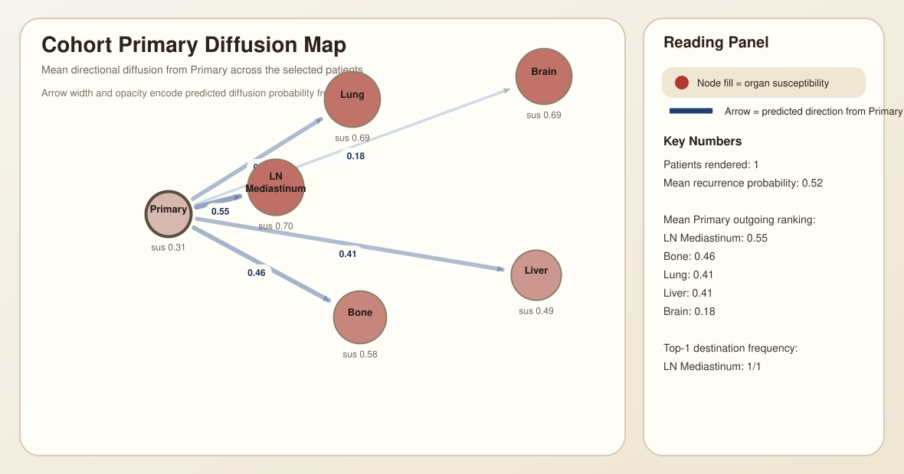

This index links each patient-level deliverable bundle. Primary outputs and latent diffusion explanations are bundled together with available cross-attention and edge interpretation materials.

| Patient | Rec Prob | Pred Loc | Top Sus Org | Top Edge Dest | Top Path | Has Cross-Attn |
|---|---|---|---|---|---|---|
| R01-003 | 0.5176 | distant | LN Mediastinum | LN Mediastinum | Primary -> LN Mediastinum | 1 |